# 图像变换
# 空间滤波
# 基础概念
空间滤波机理
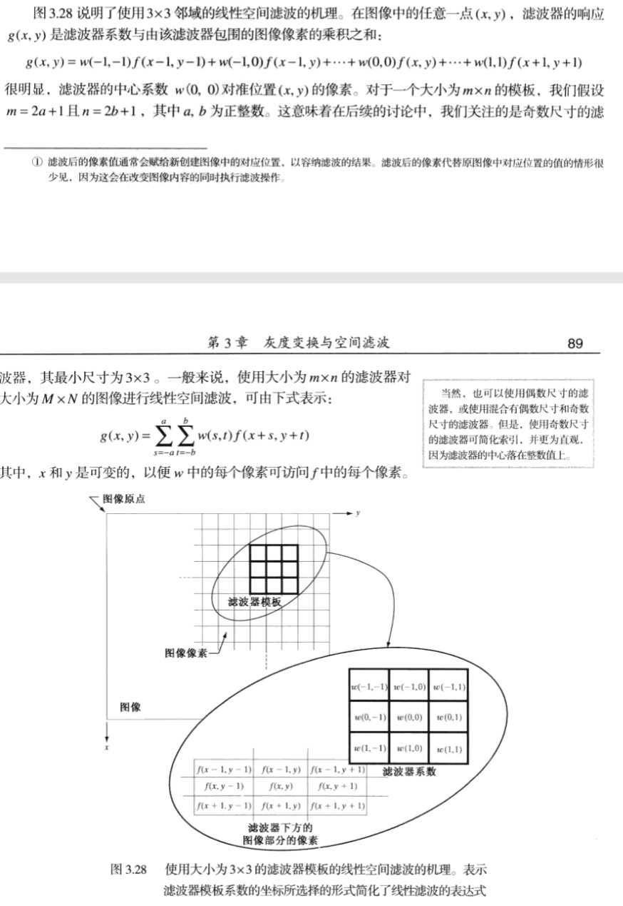空间相关与卷积
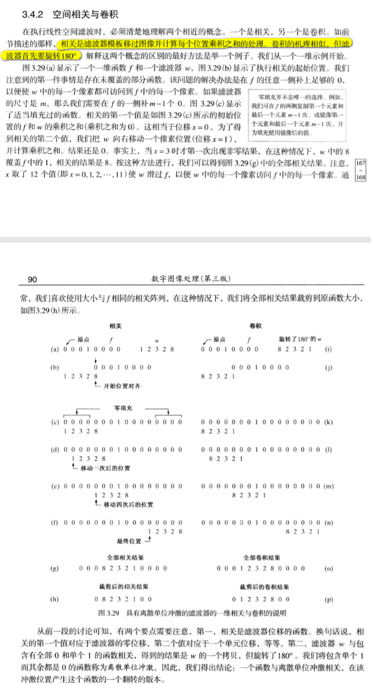
# 平滑滤波器
通常用于抑制噪声
- 均值滤波

均值滤波是一种低通滤波，会对图像锐化（模糊）
- 中值滤波【待补充】
高斯滤波【待补充】
高斯滤波器是一种线性滤波器，能够有效的抑制噪声，平滑图像。其作用原理和均值滤波器类似，都是取滤波器窗口内的像素的均值作为输出。其窗口模板的系数和均值滤波器不同，均值滤波器的模板系数都是相同的为1；而高斯滤波器的模板系数，则随着距离模板中心的增大而系数减小。所以，高斯滤波器相比于均值滤波器对图像个模糊程度较小。
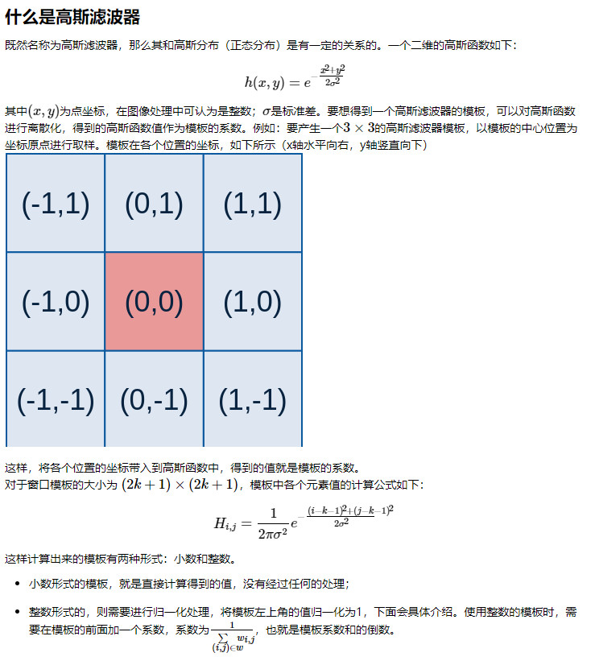高斯滤波器的大小为
size = round(3*σ)*2+1
参考传送门
一个图像滤波器可以描述为一个线性系统，具体可以参考图像复原与重建部分的空间域滤波去噪的理论解释，再配合线性系统即可。
# 锐化空间滤波器
通常用于突出图像细节；基于连续域的微分到离散域的差分思想实现。
其实相当于高通滤波器
一阶微分算子
水平，垂直梯度算子

Roberts算子
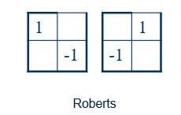Prewitt算子
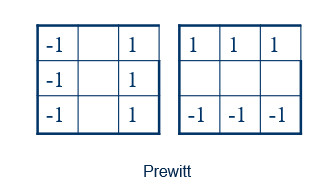Sobel算子
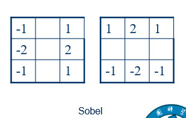
二阶微分算子
Laplaian算子
拉普拉斯算子处理是常用的边缘增强处理算子，它是各向同性的二阶导数。
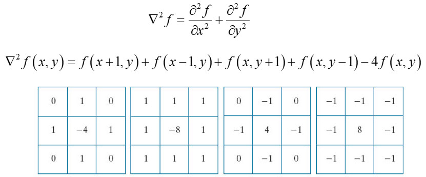
图像导数计算基本概念【待补充】
差分运算
- 前向差分
- 后向差分
- 中心差分
导数
- 一阶导数
- 二阶导数
图像导数运算所带来的问题：噪声放大
# 频率滤波
在图像中，高频信号代表着图像的细节，低频信号代表图像的尺度特征。
# 基本概念
复数
傅里叶级数
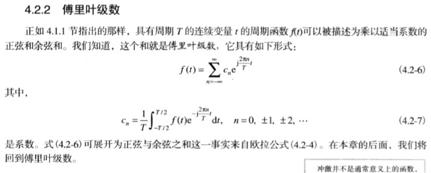连续变量函数的傅里叶变换
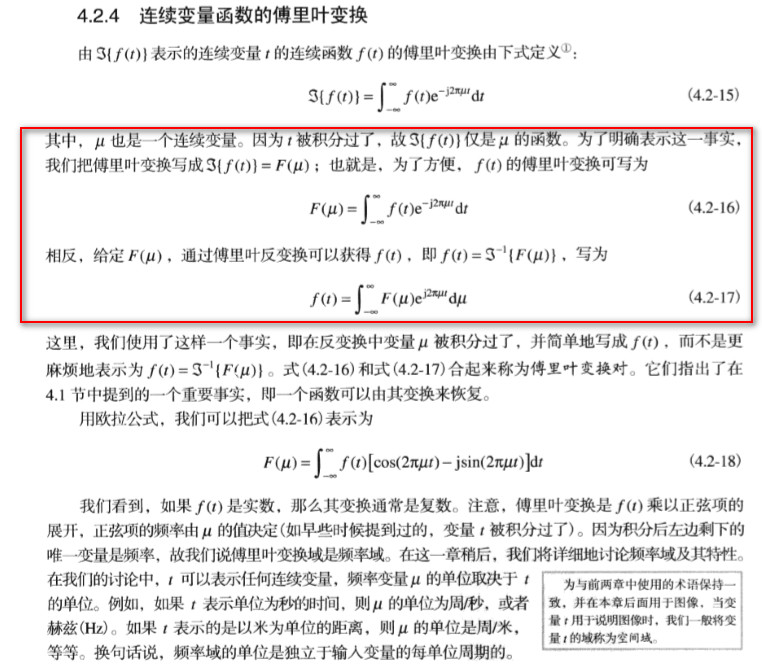卷积定理

# 采样定理
预先知识-关于复数
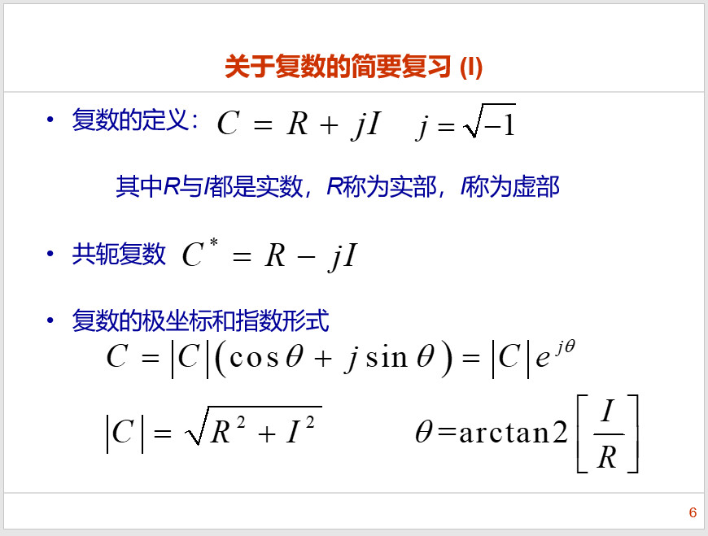 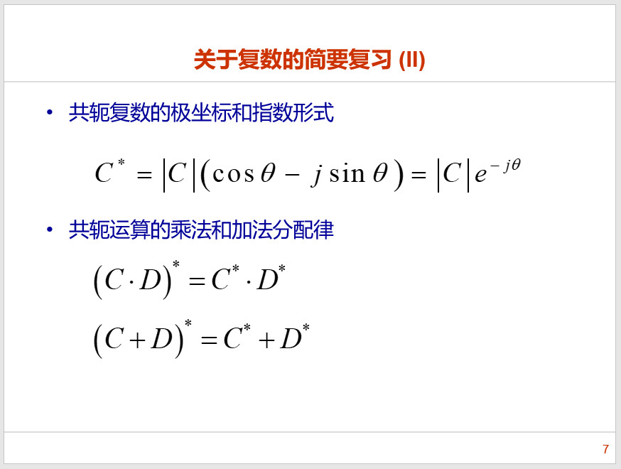 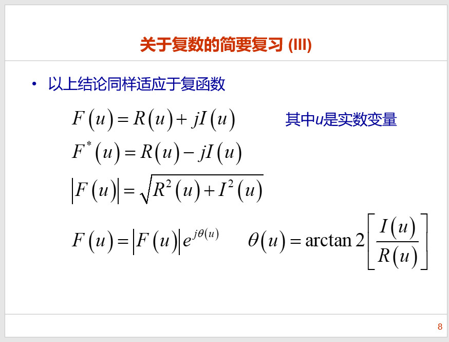重点理解是复数的极坐标和指数形式与共轭运算的乘法和加法
预先知识-傅里叶级数和傅里叶变换
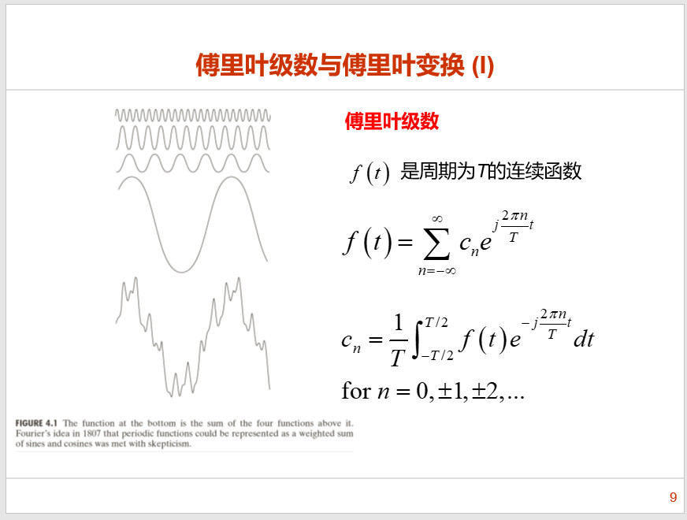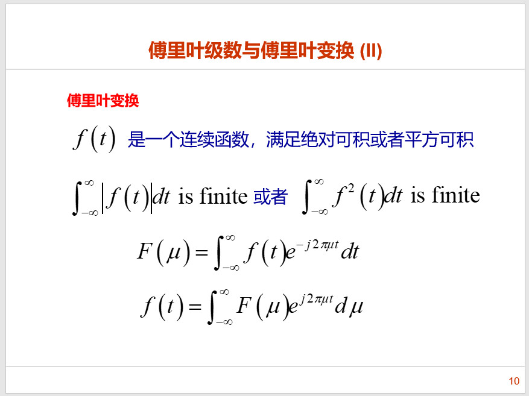傅里叶级数说明，任意具有周期的连续函数，可用傅里叶级数展开
预先知识-脉冲信号
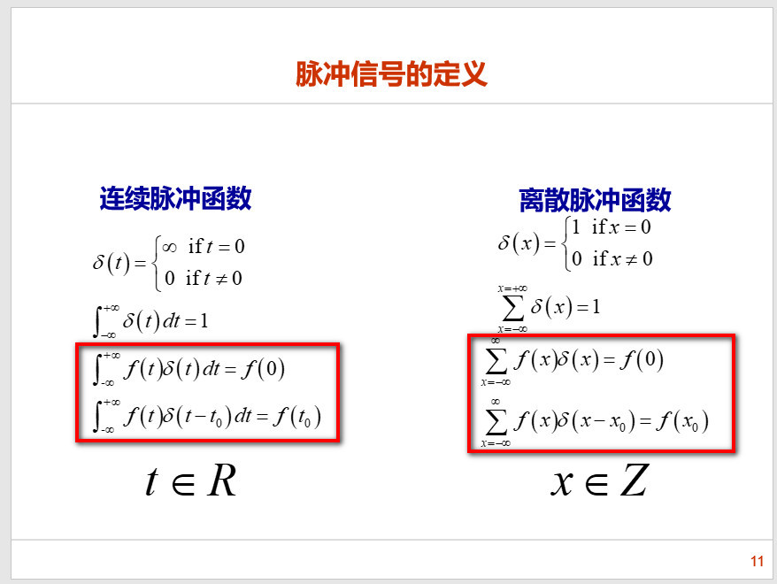脉冲信号主要起来筛选作用，重点看其积分，为指定位置的积分，即筛选积分
取样
在进行计算机处理之前，连续函数必须转换为一系列离散值，这样就需要取样和量化。
考虑一个连续函数，我们希望以独立变量t的均匀间隔()取样。模拟取样的一种方法是用一个单位间隔的冲激串作为取样函数去乘以，即
是采样后的函数，是取样函数。
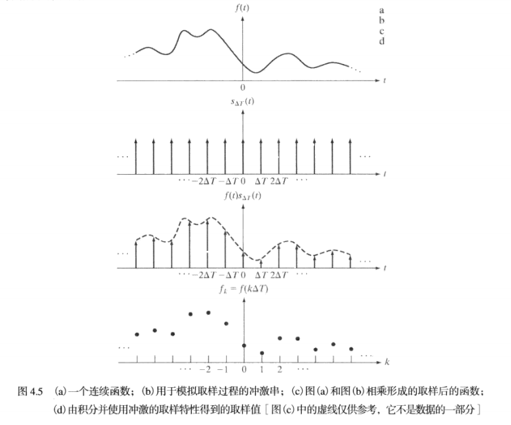取样函数具有一个特性，即
取样函数的傅里叶变换
令代表连续函数的傅里叶变换。由卷积定理可知，空间域两个函数乘积的傅里叶变换是两个函数在频率域的卷积。这样，取样后的函数的傅里叶变换为

其中
于是我们得到取样函数的傅里叶变换
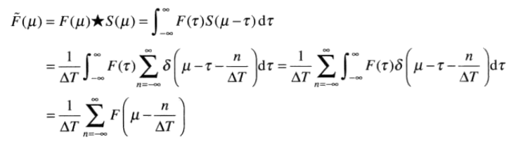最后一步求积分，可以利用取样函数特性来推导
该式子表明，取样后的函数的傅里叶变换是的一个拷贝的无限，周期序列，也就是原始连续函数的傅里叶变换。拷贝的间隔由

取样定理
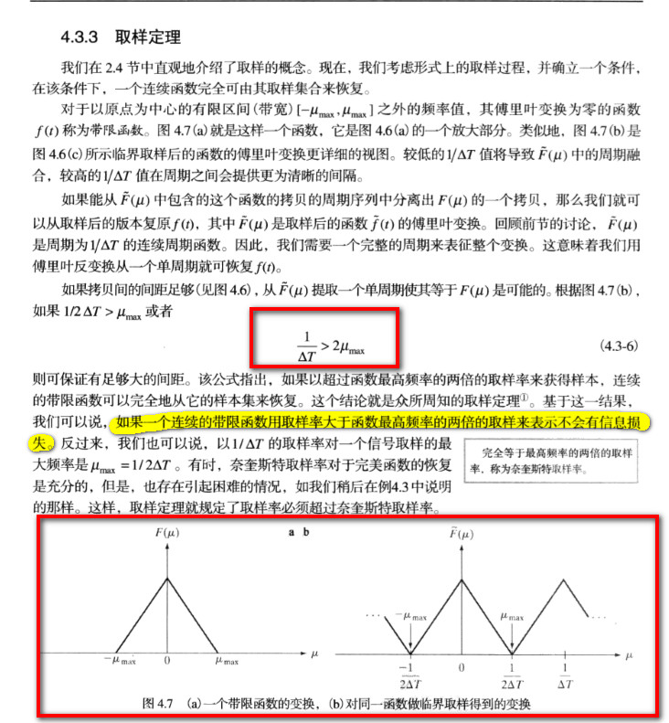以一个高于奈奎斯特取样率取样后的离散函数的傅里叶变换为例子。
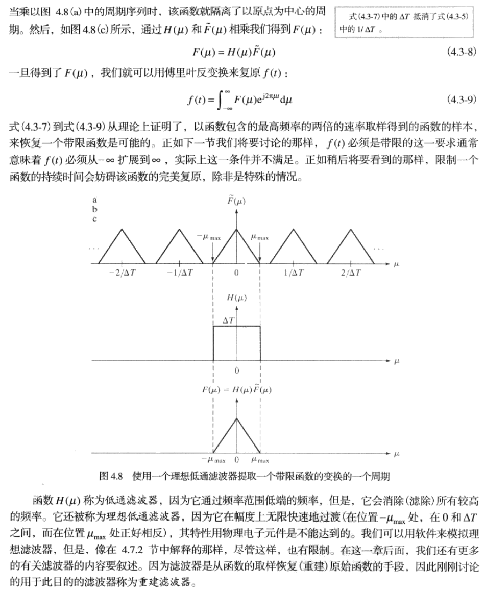混淆
如果用一个取样频率低于奈奎斯特取样率的函数取样，即欠采样，会导致混淆。
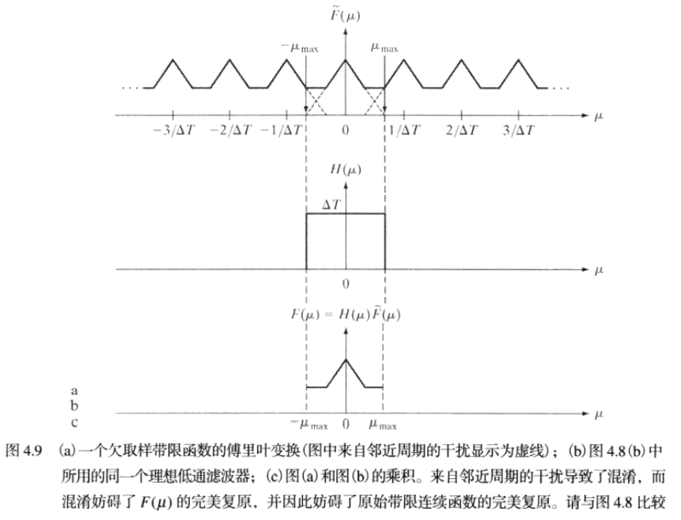该图说明取样率小于奈奎斯特取样率的后果是，傅里叶变换周期现在是重叠的，不管使用何种滤波器，都不可能分离出变换的一个周期。于是反变换将产生一个与原函数不同的。它是一个混叠函数，因为它包含了原函数中不存在的频率分量。混叠函数甚至可能与原函数毫无相似之处。
# 傅里叶变换
# 傅里叶变换推导流程（了解）
傅里叶级数（简谐波形式）——傅里叶级数（指数形式）——傅里叶积分——傅里叶变换
流程：
傅里叶发现周期信号可以分解为n个简谐波的叠加；
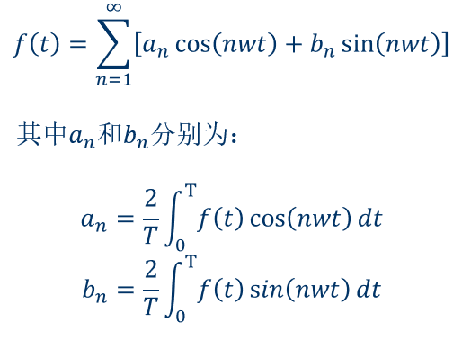利用欧拉公式，转变为指数形式傅里叶级数；
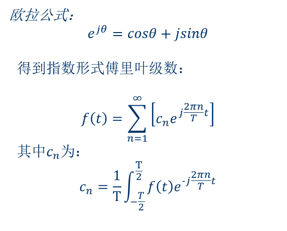再考虑非周期信号时，可将非周期信号认为是有限周期信号取无穷大的情况，此时指数形式累加转为求极限，即为傅里叶积分；最终在傅里叶积分中提取出傅里叶变换。
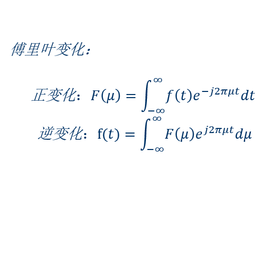
# 离散傅里叶变换（DFT）
由于计算机处理的都是离散的变量，所以连续函数必须转换为离散值序列。
一维离散傅里叶变换推导：
由连续傅里叶变换定义可知：
通过对连续函数乘以一个取样函数（该取样函数等于单位间隔的一个冲激串），得到离散化函数
将离散化函数代入傅里叶变换，可得到
\begin{align} \tilde{F}(\mu)&=\int_{-\infty}^{\infty}{\tilde{f}(t)e^{-j2 \pi \mu t}}dt=\int_{-\infty}^{\infty}{\sum_{-\infty}^{\infty}{f(t)\delta(t-n\Delta T)e^{-j2\pi \mu t}}} \\ &= \sum_{n=-\infty}^{\infty}\int_{-\infty}^{\infty}{f(t)\delta(t-n\Delta T)e^{-j2\pi \mu t}}dt \\ &= \sum_{n=-\infty}^{\infty}{f_ne^{-j2\pi \mu n \Delta T}} \end{align}其中最后一步等式成立条件是由冲激喊的取样性质得到（即冲激函数仅在周期位置取值有值，其他位置为0）
由采样定理过程中，可知傅里叶变换是周期为的无限周期连续函数。因此，表征所需要的只是一个周期，对该函数的一个周期进行取样是DFT的基础。
假设我们要从到的一个周期内等间隔地取的个样本，在如下频率下取样，就可以得到
- 代入就可用得到结果
其对应逆变换为
用替换，得到通用公式为：
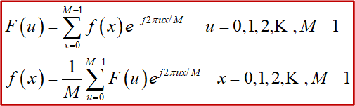- 一维
二维
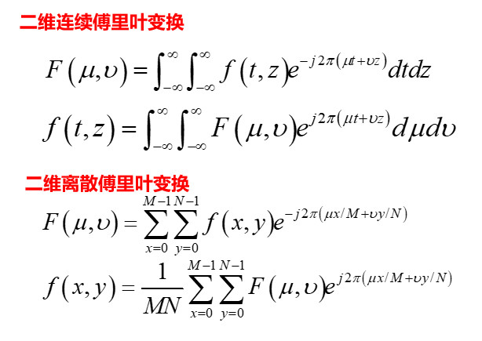
# 快速傅里叶变换(FFT)
由于按傅里叶变换公式计算，需要计算量庞大，需要有快速算法来优化。人们发现了快速傅里叶变换（FFT）。FFT对于傅里叶变换极其重要。
推导FFT：【待补充】
图像二维快速傅里叶变换表达
正向变换
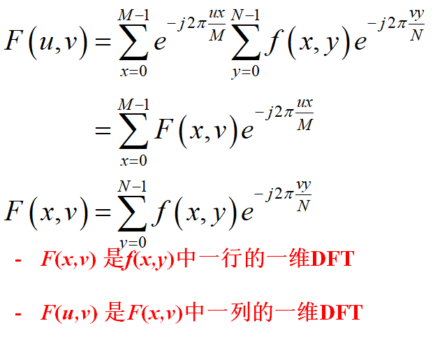即先对图像的行进行一次一维DFT，再对图像的列进行一次一维DFT。拆开计算，以减少计算量。
逆向变换
逆向变换主要分为3步。
逆变换公式求共轭，两边同乘（目的是为了向正变换表达靠拢，即让指数项添加负号）
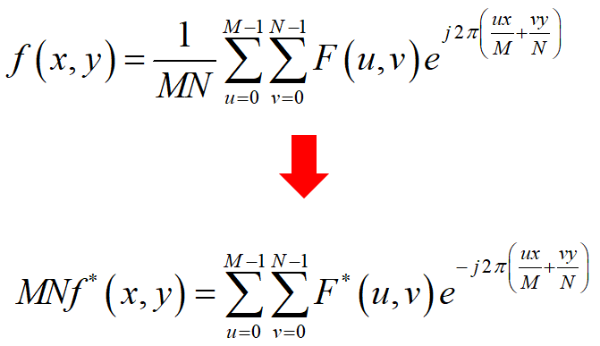再进行离散傅里叶变换，然后反共轭，两边同除
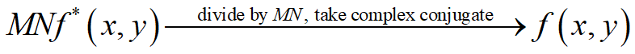
# 频率域滤波
# 低通滤波器
低通滤波法是一种频域处理法。对于一幅图像，它的边缘、跃变部分以及噪声都是图像的高频成分，而大面积的背景区和慢变部分则是图像的低频成分，用频域低通滤波法除去其高频分量就能去掉噪声，使图像平滑。
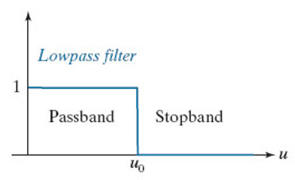理想低通滤波器（ILPF）
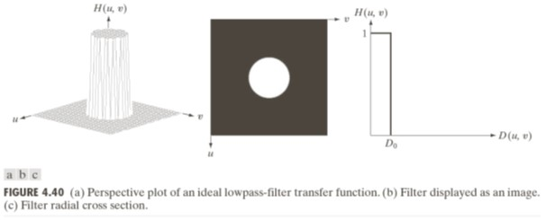
 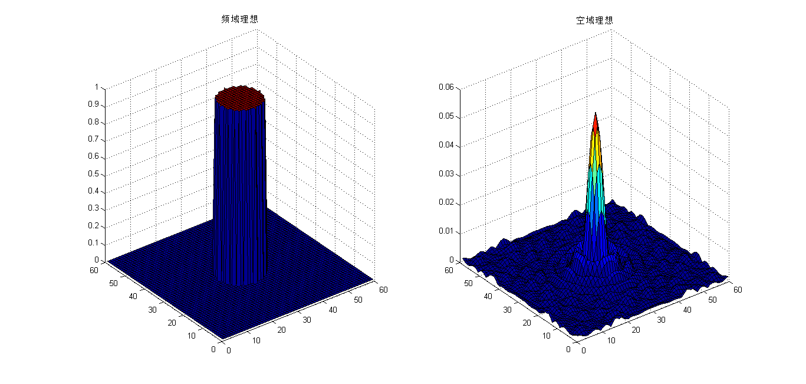
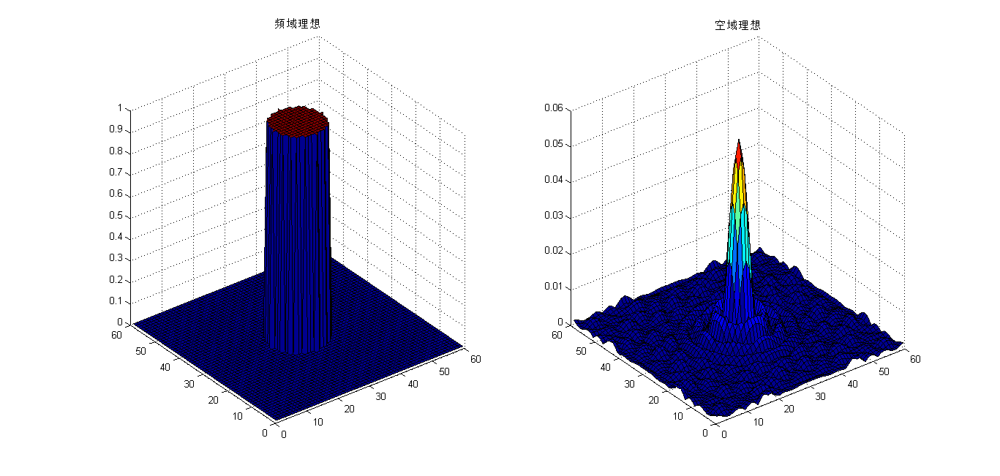 左边是理想低通滤波器在频率域的函数，右边是理想低通滤波器在空间域的函数，可以发现四周起伏很大，这样滤波器很容易出现振铃效应。
振铃效应是一种出现在信号快速转换时，附加在转换边缘上导致失真的信号。而在图像或影像上，振铃效应会导致出现在边缘附近的环带或像是"鬼影"的环状伪影；在音讯中，振铃效应会导致出现在短暂音附近的回声，特别是由打击乐器发出的声音；最容易注意到的是预回声。这个现象相似于钟被敲击之后发出声音的过程。

上面这一张，是没有振铃效应的图片

上面这一张，是有振铃效应的图片。图片显示为振铃效应产生的环状伪影。在颜色变换的两边各有3个等级：过冲，第一环，和(较微弱的)第二环。
振铃效应产生，在傅里叶变换过程中，无论是在空间域转到频率域，还是在频率域转到空间域上，只要函数有变化较为剧烈的地方，则会出现剧烈波动。
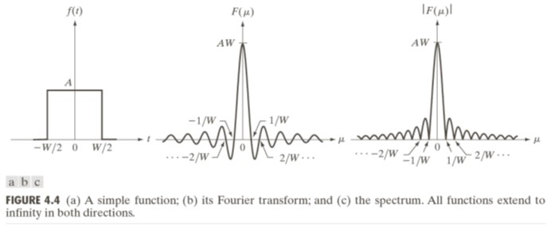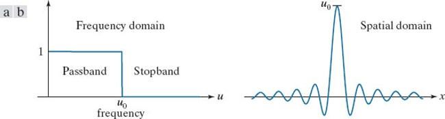上图为空间域到频率域的波动
上图为频率域到空间域的波动
高斯低通滤波器（GLPF）
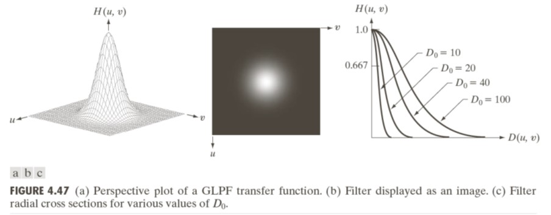方差与频率域的陡峭关系：
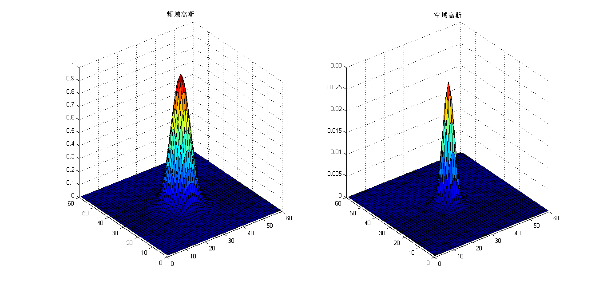
高斯函数的傅里叶变换仍然是高斯函数，故高斯型滤波器不会产生“振铃“。
但是高斯滤波器，对于低通部分过滤，过于尖锐，效果不太好
巴特沃斯滤波器
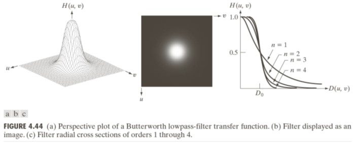
n为阶数，随着阶数增大，振铃现象越发明显。下图取n=2,可以看出空域函数外围部分出现震荡。

# 高通滤波器
根据转换公式，高通滤波器就是一个常数减去低通滤波器
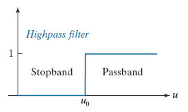下图表示理想高通滤波器，高斯高通滤波器，巴特沃斯高通滤波器
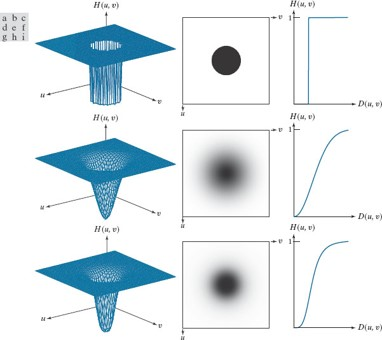
# 带阻滤波器
根据转换公式，带阻滤波器就是一个高通滤波器与低通滤波器的组合
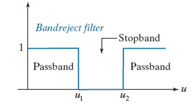# 带通滤波器
根据转换公式，带通滤波器就是一个常数减去带通滤波器

# 图像频率域滤波步骤
（频谱图中心化）：
- 计算原始图像 的DFT，得到 频谱
- 中心化：将频谱的零频点移动到频谱图的中心位置
- 计算 滤波器函数 与 的乘积 G(u,v)=F(u,v)⋅H(u,v)
- 反中心化：将频谱 的零频点移回到频谱图的左上角位置
- 计算上一步计算结果的 傅里叶反变换
- 取的实部作为最终滤波后的结果图像
上面步骤是对 图像频谱进行中心变换；我们也可以先对原始图像 进行中心变换，再计算其频谱图，滤波步骤如下
（原始图中心化）：
- 原始图像 中心变换：f(x,y)⋅(−1)(x+y)
- 计算上一步计算结果的DFT，得到其 频谱
- 计算 滤波器函数 与 的乘积 G(u,v)=F(u,v)⋅H(u,v)
- 计算 的傅里叶反变换
- 取的实部
- 上一步计算结果 乘以 (−1)(x+y)作为最终滤波后的结果图像
滤波能否取得理想结果的关键取决于上面的 滤波器函数 H(u,v) 。
图像频率特性分析
频谱图上的每一个像素点都代表一个频率值，幅值由像素点亮度变码而得。对于一幅图像，图像信号的 频率特性 如下：
- 直流分量 表示预想的平均灰度
- 低频分量 代表了大面积背景区域和缓慢变化部分
- 高频分量 代表了它的边缘、细节、跳跃部分以及颗粒噪声
- 振幅 描述了图像灰度的亮度
- 相位 决定了图像是什么样子
数字图像的二维离散傅立叶变换所得的结果的频域成分如下图所示，左上角是直流成分，变换结果四个角周围对应于低频成分，中央部分对应于高频部分
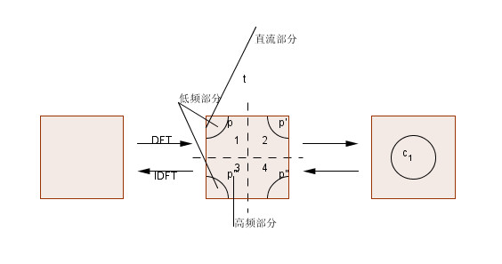为了便于观察，常常采取 换位 方法使直流成分出现在窗口的中央（中心化），变换后中心为低频，向外是高频。
在频域，可以很方便的实现 图像的锐化和模糊：
- 截取频率的低频分量，对其作傅立叶反变换，得到的就是模糊后的图像，即 低通滤波
- 截取频率的高频分量，对其作傅立叶反变换，得到的就是锐化后的图像，即 高通滤波
# 正交变换
# 引子
- 向量的内积，范数（长度）和夹角的定义
规范正交基的定义
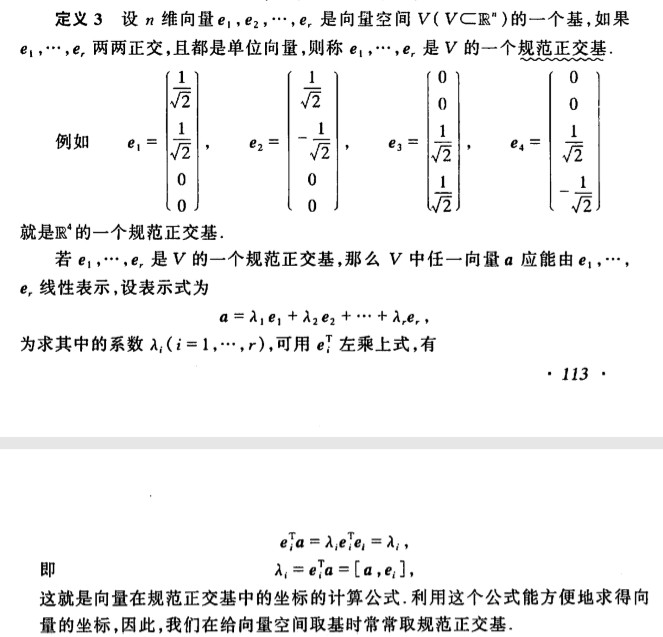
# 傅里叶变换推广到一般形式
首先，从一维离散傅里叶变换示例开始。
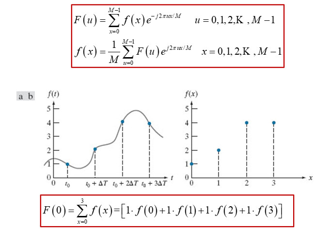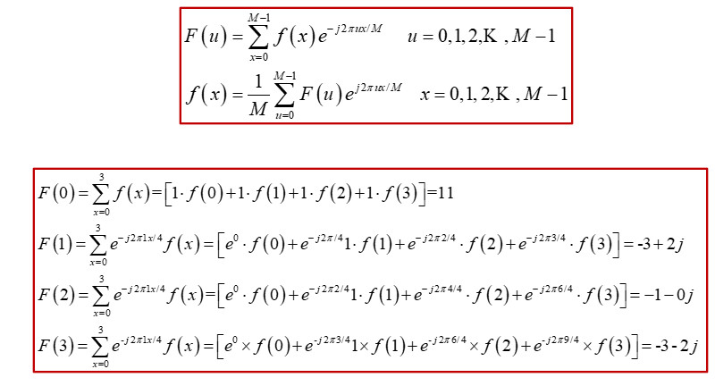通过对一维连续傅里叶变换，离散取4个点，写出F(0)的表达
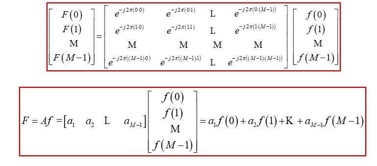同样的方式，写出F(1)，F(2)，F(3)的表达
然后以矩阵的形式进行表达，并整理为线性形式，对比之前的用规范正交基表达向量空间的方式，可得知傅里叶变换，其实可以当成用一组规范正交基表达向量空间的形式之一。
最后以形象的图表达，就是如上图所示，左侧为变换的频率域的值，中间为一组规范正交基，右侧是空间域的值。即左侧的任意一个值是中间的一行与右侧空间域的一列乘积的结果。
# 各种变换基
一维和二维傅里叶变换是正交变换的一个特例
其他变换基
DCT（离散余弦变换）
- 一维
- 二维
DST（离散正弦变换）
WHT（沃尔什-哈达玛变换）
SLT（斜变换)
HAAR（哈尔变换）
已知的最早最简单的单位正交基
DB4
BIOR3.1
STD